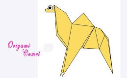
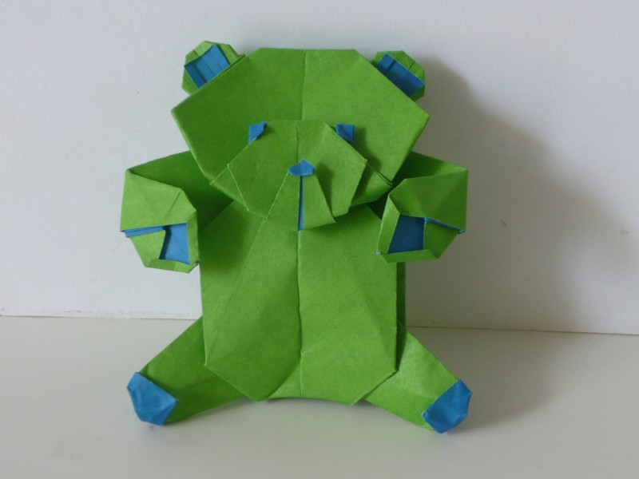
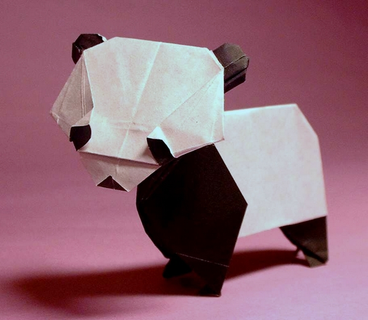
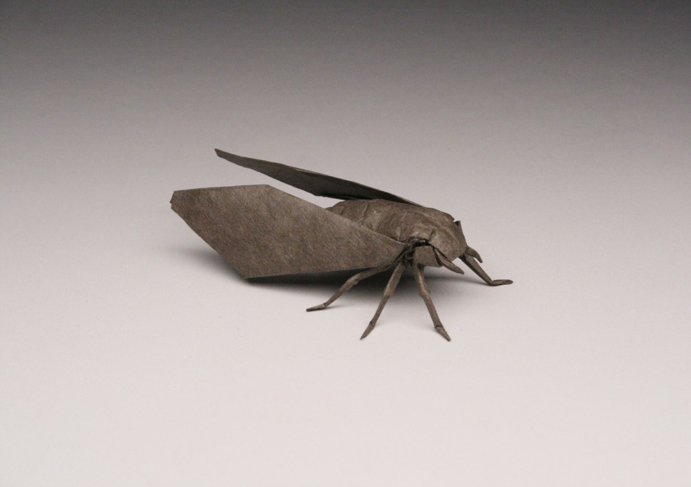

Oragami Designes
About Us
Follow Us
Click on the Images to check how to make them

Here are some Cool Facts about Camel
1) Camels ears are furry
2) Camels can easily Travel through sand because their feet are specialy made for it
3) When they find water they drink as much as they can
Click on the Images to check how to make them

Here are some Cool Facts about Chamaleon
1) Chameleons are reptiles that are the part of the iguana suborder.
2) Changing colour iss the important part of the communication betwen Chameleons.
3) Most Chameleons have prehensile taiol that they use to wrap around the tree branches
Here are more animal's that you can make through Oragami.
Pigeon

Teddy Bear

Panda

Cicada
